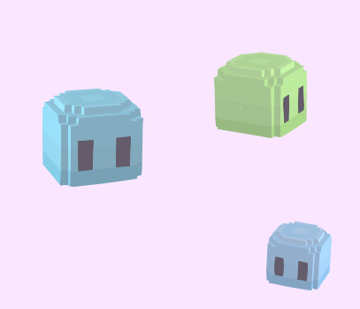
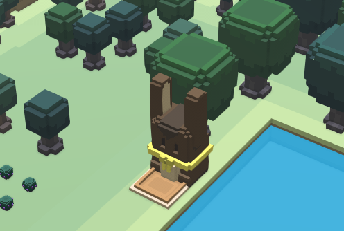
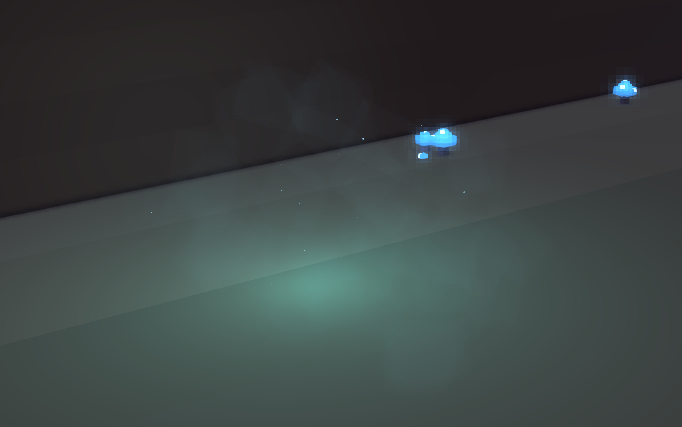

Critter nests
It's very easy to add your own critter nest to the game.
This type of scenario is implemented inside stonehearth/scenarios/static/critter_nest, via a JSON file and a script.
Then, we reuse critter_nest.json as a mixin in other scenarios (beetle_nest, deer_nest, etc).
Let's copy stonehearth/scenarios/static/ostrich_nest to our mod and rename it.
Then we have to modify the JSON file:
{
"mixins" : "stonehearth/scenarios/static/critter_nest/critter_nest.json",
"name" : "jelly_nest",
"habitat_types" : ["forest", "plains", "foothills"],
"biomes": [ "stonehearth:biome:temperate", "candyland:biome:sugarfield_plains" ],
"weight" : 3,
"data" : {
"num_critters" : {
"min" : 3,
"max" : 5
},
"critter_type" : [ "candyland:critters:jelly", "candyland:critters:jelly:tiny" ]
}
}
Adjust the path to the critter mixin so that it's absolute, otherwise the game will try to find it inside your mod.
Give this scenario a "name".
Inside the "habitat_types" array we can have one or more habitats where this scenario will spawn. The possible values are:
"plains" / "foothills" / "forest" / "mountains" / "water"Optionally, we can specify the biomes where we want this scenario to spawn. If there's no "biomes" array, the critter nest will spawn in all the biomes, even the modded ones.
There are more optional properties which have a default value in
critter_nest.jsonin case we don't include them in our JSON file:"weight" : 10 -- so that it can spawn more frequently than other critter nests.
"size" : { "width" : 16, "length" : 16 } -- the area that the critter nest will occupy.
"unique" : false -- more than one critter nest can spawn in the same map.
Inside "data", the only mandatory property is the "critter_type" (an array with the aliases of our critters).
The "num_critters" has a default of "min" : 1 / "max" : 3. There's also "critter_length" : 1, which is the default margin around the critters when they spawn, we can also tweak that value for our nest.
Create a mixinto to scenario_index.json to add your critter nest:
"mixintos" : { "stonehearth:scenarios:scenario_index" : "file(scenarios/scenario_index.json)" }The mixinto will look like this for our example:
{ "static" : { "scenarios" : [ "file(static/jelly_nest/jelly_nest.json)" ] } }Test your critter nest. You might need to promote a combat unit to clear the fog of war faster. Since there are other critter nests, it might take a while until you find the one for your custom critters (you can increase the weight of the scenario for testing). 
You can remove the other default scenarios by using methods such as mixintypes, but mind that it might affect other biomes that players are using.
Ruins
In the game the bunny statues spawn as static scenarios. We could also have added them in each of the biome files as part of the entities that spawn, but this way they can spawn in any biome automatically.
We can copy stonehearth/scenarios/static/terrain/rabbit_clan_statue to our mod and rename it.
{
"mixins" : "stonehearth/scenarios/static/entity_cluster/entity_cluster.json",
"name" : "bunny_altar",
"category" : "ruins",
"size" : {
"width" : 10,
"length" : 10
},
"weight" : 1,
"habitat_types" : ["forest"],
"data" : {
"entity_type" : [
"candyland:decoration:bunny_altar"
],
"entity_footprint_length" : 5,
"quantity" : {
"min" : 1,
"max" : 1
}
}
}
These are the properties we need to change:
Make sure to edit the "mixins" changing the path to be absolute, otherwise the game will try to find
entity_cluster.jsoninside our mod.Give the scenario a "name". The properties are pretty similar to those of the critter nest scenarios.
Change the "size" (by default it will be 16x16 if we don't include it).
Optionally give it a "weight" (by default it will be 10), so that it has more priority over other "ruins" scenarios.
Edit the "habitat_types", which can be "forest", "plains", "foothills", "mountains" and/or "water".
Inside "data" (which will be used by the
entity_cluster.luascript) we have an array with the "entity_type", containing the alias of our ruin, an "entity_footprint_length" used to give a margin around our entity, and the "quantity" of entities to spawn.Then, add a mixinto to scenario_index.json to add your scenario:
"mixintos" : { "stonehearth:scenarios:scenario_index" : "file(scenarios/scenario_index.json)" }The mixinto will look like this for our example:
{ "static" : { "scenarios" : [ "file(static/terrain/bunny_altar/bunny_altar.json)" ] } }Finally, let's test that our ruins can appear in any biome (we can restrict in which biomes we want it to appear by using the "biomes" array). 
In the Silent Woods mod, a new category of scenario was added, and the entity_cluster script was reused to spawn the fireflies. They're only visible at night because they use the lamp component: 